deeplearn_lstm
如图 是lstm与rnn的区别:
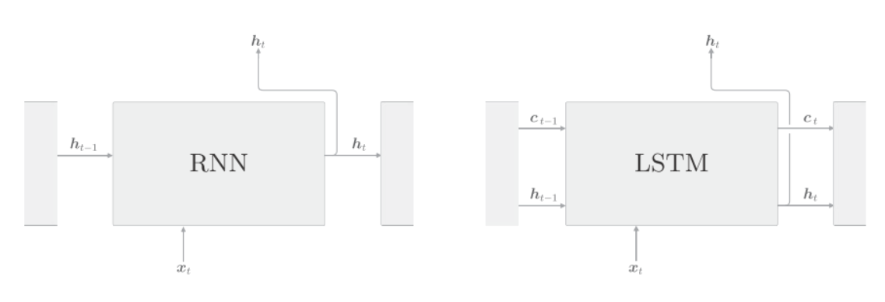
lstm与rnn的接口不同之处在于,lstm多了路径,这个称为记忆单元, 记忆单元只在lstm层内部工作, 不向其它层输出.
lstm的记忆单元, 存储了时刻时lstm的记忆, 可以理解为保存了从过去的时刻到时刻的所有有必要的信息. 然后基于这个必要信息, 向下一时刻的lstm输出隐状态.
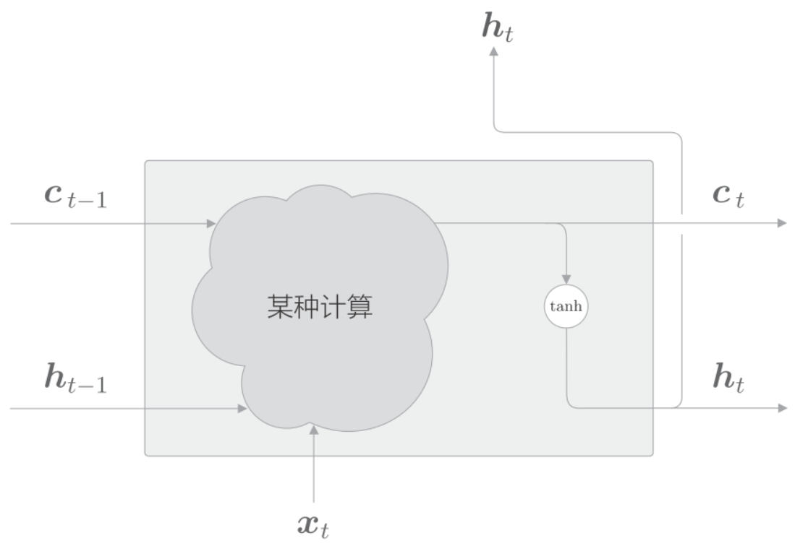
当前时刻的记忆单元是基于3个输入计算得来的. 而隐状态要使用更新后的来计算, 既
输出门
隐状态是对记忆单元应用了tanh函数. 这里对添加门. 换句话说, 针对的各个元素, 调整它们作为下一时刻的隐藏状态的重要程度. 由于这个门管理下一个隐状态的输出, 所以称为输出门().
输出门的开合程度(流出的比例)根据输入和上一个状态求出, 使用来表示:
输入有权重, 上一时刻的状态有权重. 将他们的矩阵乘积和偏置之和传给sigmoid函数, 结果就是输出门. 最后将这个和的对应元素的乘积作为的输出.
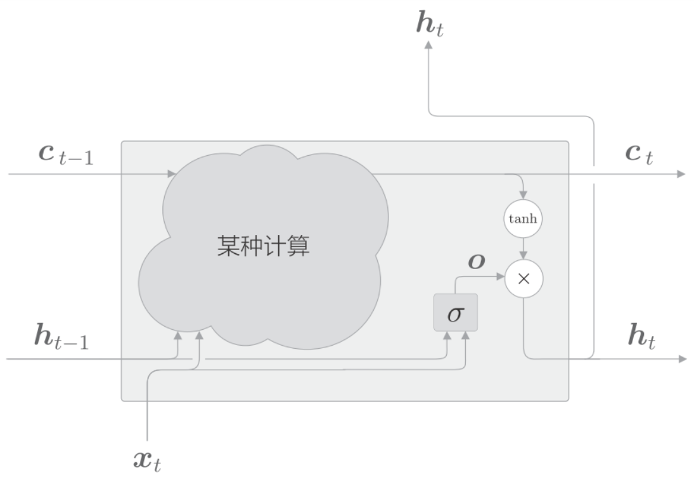
可由和的乘积计算出来, 这里的乘积是对应元素的乘积, 也称为阿达马乘积, 用表示.
tanh的输出是(-1,1)的实数, 可以理解为某种被编码的"信息"的强弱程度. 而sigmoid函数的输出是(0,1)的实数, 表示数据流的比例. 因此, 门使用sigmoid函数作为激活函数, 而包含实质信息的数据使用tanh函数作为激活函数.
遗忘门
在记忆单元上添加一个忘记不必要记忆的门, 这里称为遗忘门(forget gate).
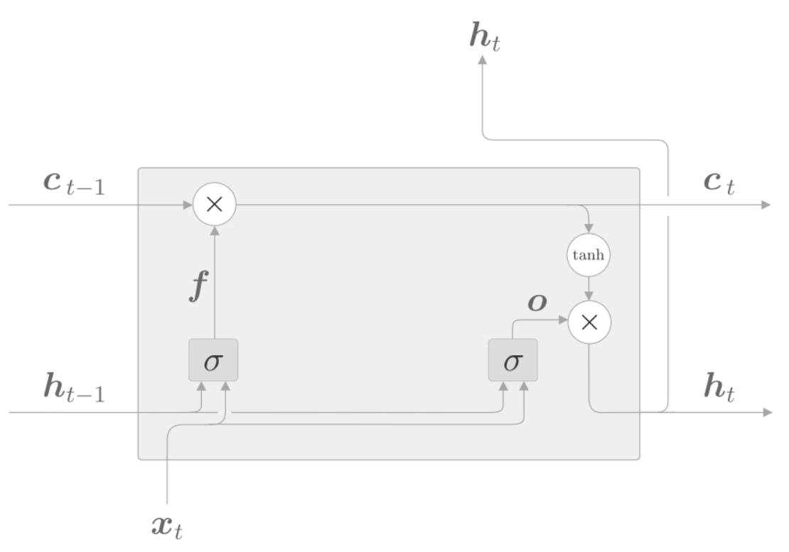
遗忘门使用表示, 公式如下:
由这个和上一个记忆单元的对应元素的乘积求得:
记忆单元
遗忘门从上一时刻的记忆单元中删除了应该忘记的东西, 但是记忆单元只会忘记信息, 我们还需要添加记忆门, 使之记住一些东西:
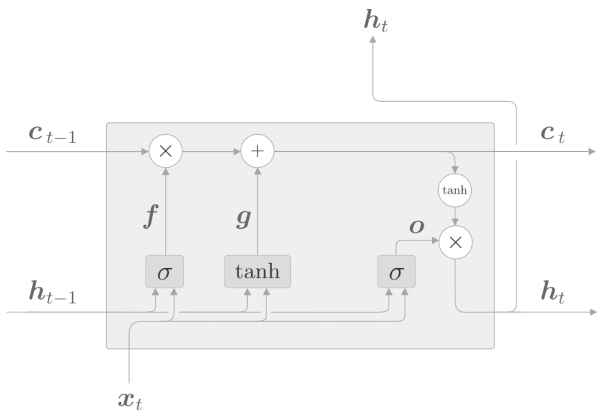
基于tanh节点计算出来的结果被加到上一时刻的记忆单元上, 这样新的信息就被添加到了记忆单元中. 这个tanh节点的作用不是门, 而是将新的信息添加到记忆单元中. 因此, 它不用sigmoid函数作为激活函数, 而是使用tanh函数, 公式如下:
将加到上一时刻上, 形成新的记忆.
输入门
我们给添加门, 称为输入门(input gate).
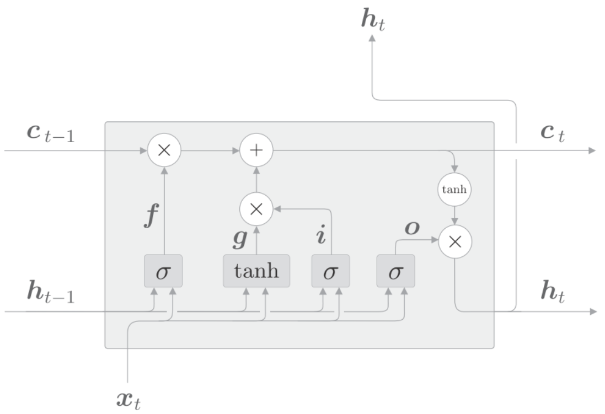
输入门用来判断新增信息的各个元素的价值有多大, 对要添加的信息进行取舍, 给信息加权.用表示输入门, 用表示输出.
然后将和对应元素的乘积添加到记忆单元中去.
反向传播
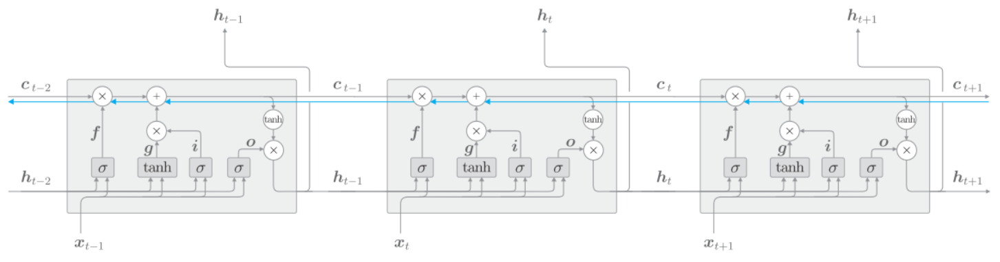
记忆单元的反向传播仅流过"+"和"X"节点. "+"节点将上游传来的梯度原样流出, 所以梯度没有变化.
"X"节点的计算并不是矩阵乘积, 而是对应元素乘积, 而且每次都会基于不同门值进行对应元素的乘积计算, 所以不会发生梯度消失.
lstm的实现
首先是计算遗忘门, 然后计算记忆单元和记忆门, 然后将他们添加到当前时刻的记忆单元里
然后计算输出门, 并和当前的记忆单元乘积计算当前的隐状态.
注意式子中的4个放射变换, 可以进行合并:
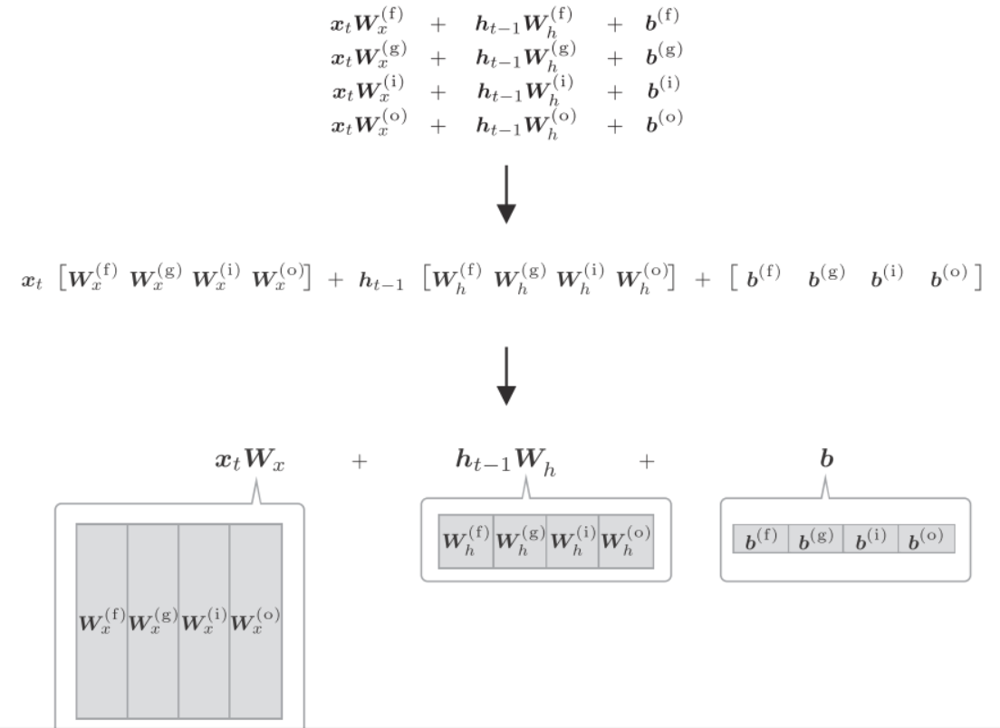
四个权重和偏置被整合成了1个, 原本单独执行4次的放射变换通过1次计算即可完成, 加快计算. 矩阵库计算"大矩阵"会非常快, 而且代码写起来也更简单:
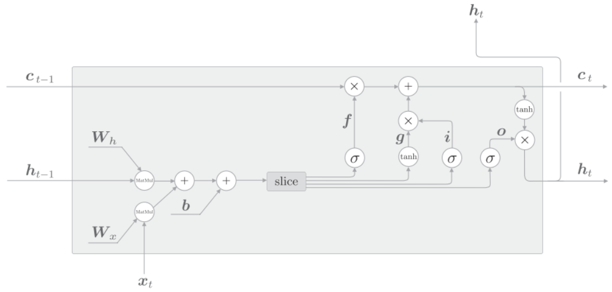
如上图, 先执行4个放射变换. 然后基于slice节点, 取出4个结果. slice节点是将放射变换的结果均等的分成4个等份.
python实现, 首先是__init__方法:
class LSTM:
def __init__(self, Wx, Wh, b):
self.params = [Wx, Wh, b]
self.grads = [np.zeros_like(Wx), np.zeros_like(Wh),
np.zeros_like(b)]
self.cache = None初始化的参数有Wx,Wh,b, 这些权重整合了4个权重. 把这些参数获得的权重参数设定给成员变量params, 并初始化形状与之对应. cache保存正向传播的中间结果, 将在反向传播的计算中使用.
forward
接下来实现正向传播的forward(x, h_prev, c_prev)方法. 它的参数接收当前时刻的输入x, 上一时刻的隐状态h_prev, 以及上一时刻的记忆单元c_prev
def forward(self, x, h_prev, c_prev):
Wx, Wh, b = self.params
N, H = h_prev.shape
A = np.dot(x, Wx) + np.dot(h_prev, Wh) + b
# slice
f = A[:, :H]
g = A[:, H:2*H]
i = A[:, 2*H:3*H]
o = A[:, 3*H:]
f = sigmoid(f)
g = np.tanh(g)
i = sigmoid(i)
o = sigmoid(o)
c_next = f * c_prev + g * i
h_next = o * np.tanh(c_next)
self.cache = (x, h_prev, c_prev, i, f, g, o, c_next)
return h_next, c_next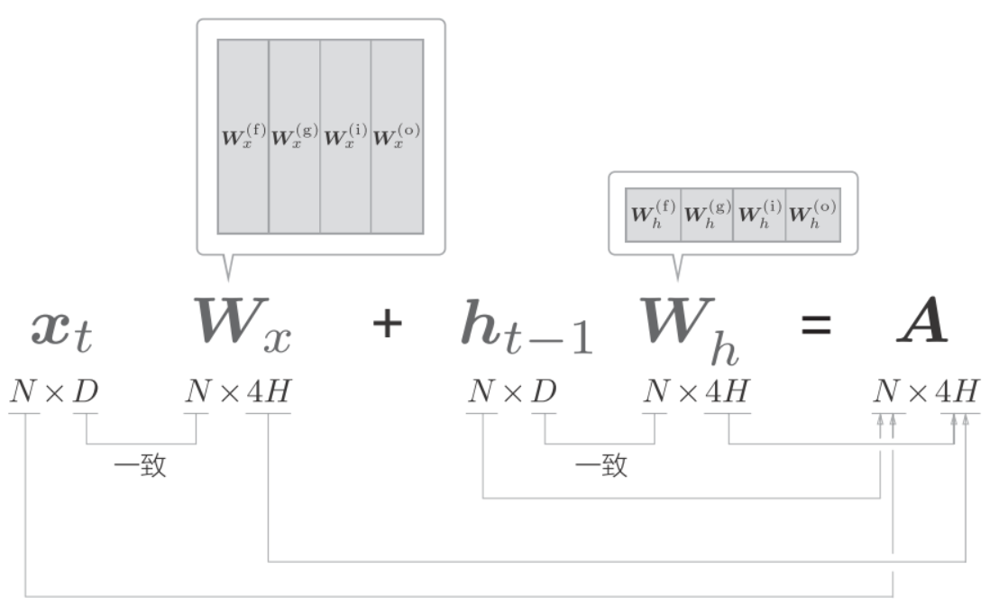
批大小是N, 输入数据的维度是D, 记忆单元和隐状态的维度都是H. A中保存了4个放射变换的结果. 通过
A[:, :H]、A[:, H:2*H]这样的切片取出数据, 并分配给之后的计算节点.
back
slice节点将矩阵分成了4份, 因此反向传播需要整合4个梯度:
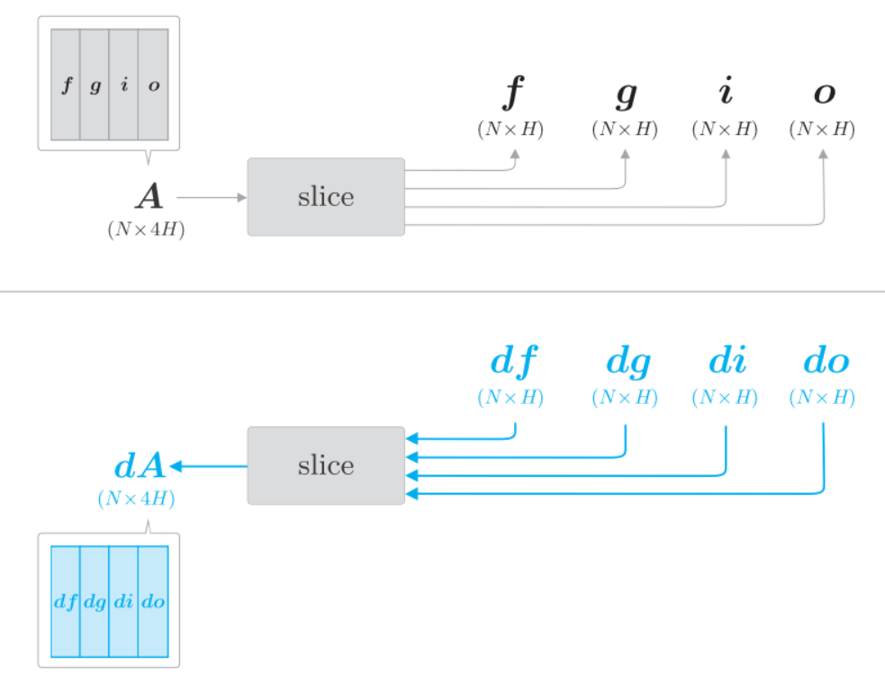
图中有4个梯度,
df,dg,di和do, 将他们拼接成dA. 使用NumPy的np.hstack()可在水平方向上将给定的数组拼贴起来.
dA = np.hstack((df, dg, di, do))Time LSTM层的实现
Time LSTM由T个LSTM层构成, 如下图:
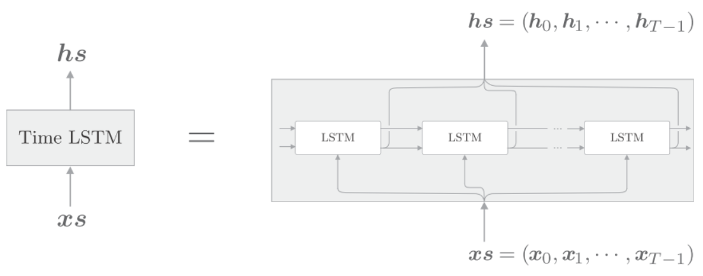
因为使用Truncated BPTT进行学习, 它以适当的长度截断反向传播的连接, 但是需要维持正向传播的数据流, 因此将隐状态和记忆单元保存在成员变量中. 这样
forward()调用时, 就可以继承上一时刻的隐状态和记忆单元.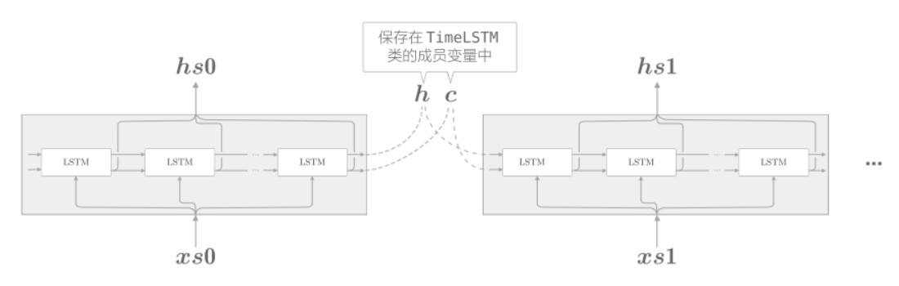
python实现:
class TimeLSTM:
def __init__(self, Wx, Wh, b, stateful=False):
self.params = [Wx, Wh, b]
self.grads = [np.zeros_like(Wx), np.zeros_like(Wh),
np.zeros_like(b)]
self.layers = None
self.h, self.c = None, None
self.dh = None
self.stateful = stateful
def forward(self, xs):
Wx, Wh, b = self.params
N, T, D = xs.shape
H = Wh.shape[0]
self.layers = []
hs = np.empty((N, T, H), dtype='f')
if not self.stateful or self.h is None:
self.h = np.zeros((N, H), dtype='f')
if not self.stateful or self.c is None:
self.c = np.zeros((N, H), dtype='f')
for t in range(T):
layer = LSTM(*self.params)
self.h, self.c = layer.forward(xs[:, t, :], self.h, self.c)
hs[:, t, :] = self.h
self.layers.append(layer)
return hs
def backward(self, dhs):
Wx, Wh, b = self.params
N, T, H = dhs.shape
D = Wx.shape[0]
dxs = np.empty((N, T, D), dtype='f')
dh, dc = 0, 0
grads = [0, 0, 0]
for t in reversed(range(T)):
layer = self.layers[t]
dx, dh, dc = layer.backward(dhs[:, t, :] + dh, dc)
dxs[:, t, :] = dx
for i, grad in enumerate(layer.grads):
grads[i] += grad
for i, grad in enumerate(grads):
self.grads[i][...] = grad
self.dh = dh
return dxs
def set_state(self, h, c=None):
self.h, self.c = h, c
def reset_state(self):
self.h, self.c = None, None